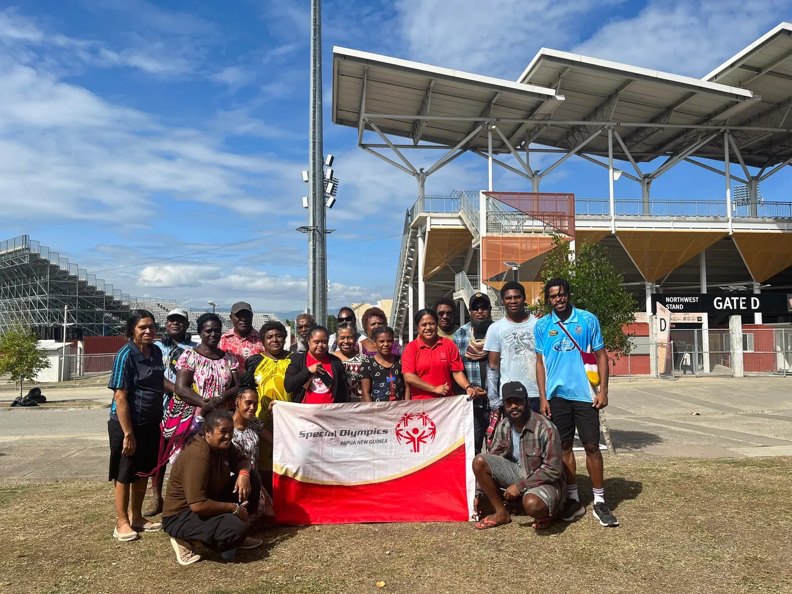
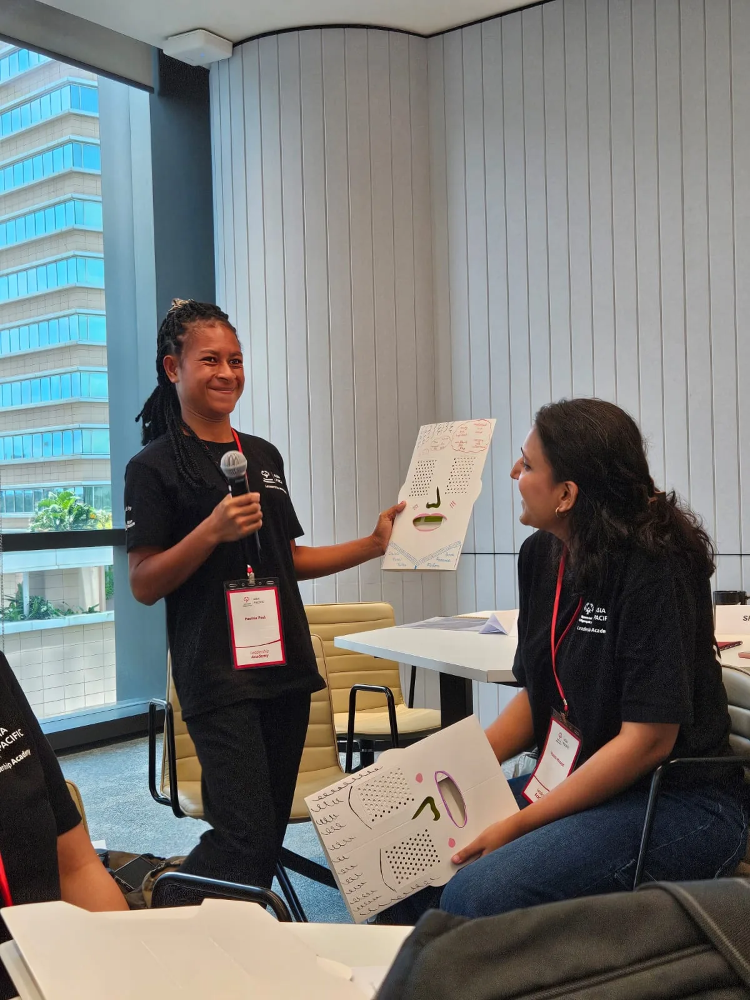
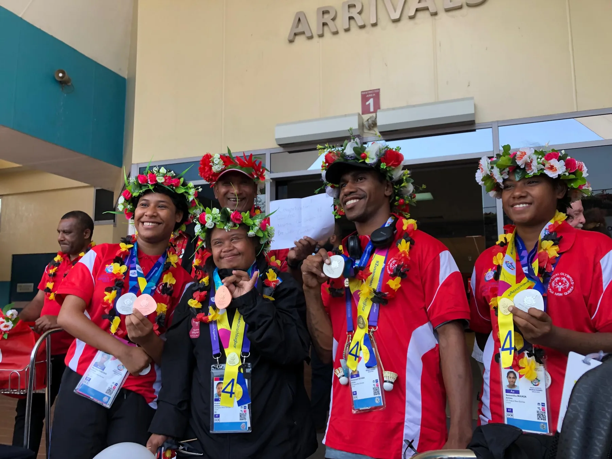

SOPNG established
A local organization begins creating inclusive sport opportunities in Papua New Guinea.
ABOUT SOPNG
Special Olympics Papua New Guinea is building communities where people with intellectual disabilities can take part, develop and lead.
Explore our programs
OUR PURPOSE
Through year-round sport, health, family and youth initiatives, SOPNG works alongside athletes and local communities to open opportunities and build understanding.
The movement is rooted in the belief that athletes should be welcomed for their abilities and supported to reach their own goals.
OUR JOURNEY
SOPNG’s story is shaped by the athletes, families, volunteers and partners who make the movement possible.
A local organization begins creating inclusive sport opportunities in Papua New Guinea.
SOPNG becomes an accredited Special Olympics program.
Sport, health, family and youth initiatives create more ways to play, lead and belong.

Built togetherHOW WE WORK
Welcome each person and adapt activities so they can take part.
Bring athletes, families, coaches and partners into the work.
Recognize what athletes can do and create space for their voices.

BE PART OF THE STORY
Get to know our programs, bring a group into the movement or ask our team how to get involved.
Talk with SOPNG